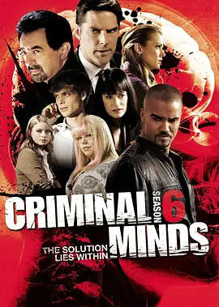

9.1
犯罪心理 第六季
Criminal Minds Season 6
2010
美国
评分 9.1
导演:
Charles Haid / Chris Long
演员:
乔·曼特纳 / 托马斯·吉布森 / 谢默·摩尔 / 马修·格雷·古柏勒 / 帕姬·布鲁斯特 / A·J·库克 / 克里斯汀·范奈丝
类型:
剧情,悬疑,犯罪
剧情简介
第六季的 BAU 再次迎来沉重的年份。案件仍旧跨州不断，从偏远乡村到大都市的郊区，每一处现场都透露着压抑而危险的气息。团队在清晨的机场和深夜的会议室之间来回奔走，忙于解读那些令人胆寒的犯罪模式。霍奇在经历家庭动荡后愈发克制，他在指挥案情时的冷静让队友安心，却也让人感到他内心那道始终未愈的伤口。罗西作为小组的支柱，继续以丰富经验稳住团队节奏，他在细节中的敏锐观察常常一针见血地揭开嫌犯的盲点。瑞德在这一季面对更多挑战，他的推理依旧精准，但个人情绪和对母亲的牵挂让他偶尔显得心不在焉。他在案板前翻阅档案时的专注和现场推断时的细腻，构成团队最不可替代的一环。摩根在现场依旧强势果断，从破门到追捕的每个动作都带着压迫感，却在面对受害者家属时显现出一种意外的温度。普莱提斯的故事线本季愈发复杂，她的过去逐渐浮出水面，让她在审讯和侧写中表现出异于常人的敏感；JJ 则在职业选择的关键时刻摇摆，在媒体沟通与团队责任之间承受巨大的压力。加西亚继续以她独有的方式，为整个队伍注入调和气氛的亮色，她的键盘敲击声在最紧张的时刻成了大家的心理支撑。案件方面，第六季呈现了更多带有迷惑性和极端心理扭曲的嫌犯：有人精心设计连环陷阱，让警方误以为是模仿犯；有人利用家族关系隐藏真相；也有人在暴力背后深藏无法愈合的心理伤痕。团队在这些案件中不断被提醒，他们追捕的并不仅是作案者，更是人性深处那股随时可能被点燃的黑暗。随着成员之间的离别与重聚，BAU 也在危机中调整步伐。即便任务残酷，他们依旧在每一次行动中守住那条不被黑暗吞没的底线。